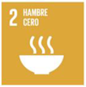
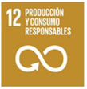
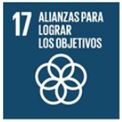

Justificación de su desarrollo:
Esta SdA permite al alumnado aplicar de forma práctica los contenidos del módulo Desarrollo web en entorno servidor mediante un proyecto con impacto social: el desarrollo de una aplicación web para la gestión de un banco de alimentos.
El proyecto combina el aprendizaje técnico (arquitectura cliente-servidor, bases de datos, CRUD, autenticación, frameworks backend) con el compromiso social, al abordar una problemática real como es la distribución equitativa de recursos y la lucha contra el desperdicio alimentario.
Impacto esperado:
- Técnico: Consolidación de competencias del módulo mediante el desarrollo de una aplicación completa y funcional.
- Social: Sensibilización sobre el uso ético y solidario de la tecnología.
- Profesional: Preparación para contextos reales de desarrollo y mejora de la empleabilidad.
- Personal: Aumento de la motivación al trabajar en un proyecto útil, conectado con la realidad.
Relación de la SdA con los ODS y Retos del siglo XXI:
- ODS 2: Hambre cero
- ODS 12: Producción y consumo responsables
- ODS 17: Alianzas para lograr los objetivos
 